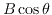

Next: Primary Beams and Mosaicing Up: Analysing Spectral Cubes Previous: Fitting a tilted ring
There is a suite of tasks to help analyse Zeeman data. These tasks implement the techniques discussed in gruesome detail by Sault, Killeen, Zmuidzinas & Loushin (1990) (ApJS 74, 437) and by Killeen, Lo & Crutcher (1992) (ApJ 385, 585).
where k is a constant depending upon the particular spectral line,
 is the line-of-sight component of the magnetic field, and
 is the total intensity spectrum. The procedure is then to fit
the derivative of the I spectrum to the V spectrum thus giving
.
is the total intensity spectrum. The procedure is then to fit
the derivative of the I spectrum to the V spectrum thus giving
.
Zeeman work can be very complicated, especially if the signal is weak
(and the signal-to-noise ratio parameter  - see Sault et al. - is close
to the noise value), and a description of all the pros and cons of the
fitting techniques is beyond this guide. We suggest you read the above
papers, and if you are still awake at the end, then run the software.
- see Sault et al. - is close
to the noise value), and a description of all the pros and cons of the
fitting techniques is beyond this guide. We suggest you read the above
papers, and if you are still awake at the end, then run the software.
Generally, the fit is done over some spatial and spectral region in which it is assumed the splitting is constant. In the spatial averaging technique, all the spectra in the spatial region are averaged. However, if the spectra are not all similar in shape, this will average down the signal as well as the noise. Thus, the spatial summing technique is also offered. Here, all the spectra in the spatial area are fit simultaneously so that the signal is not averaged down. However, one has to be concerned with the spatial correlation of the data when predicting the errors in this case. This is a very big concern indeed (see Zeesim below).
The fitting procedure is implemented in the task zeestat. This task expects the I (keyword iin) and V (keyword vin) input cubes to be ordered such that the first axis is the spectral axis (frequency or velocity [radio or optical definition]) and the second and third axes are the spatial axes (RA and DEC). Use the reorder if they are not. The beam image (keyword beam) is used to determine the spatial correlation when using the spatial summing technique in order to get a good estimate of the error in the result (it does not affect the result itself much). However, generally, this does not work well and accurate errors for spatially summed data should be obtained with a monte carlo technique implemented in the task zeesim described below. The beam is not needed when spatially averaging.
If the spectra are spectrally correlated, this information can be transmitted to zeestat via the spectral correlation coefficient assigned to the keyword rho. For Hanning smoothed spectra in which every other channel has been dropped, this should be 1/6. You must specify with freq, to the nearest MHz, the rest frequency of the spectral line. This is used to determine the conversion from splitting in channels to a magnetic field. zeestat only knows about a few particular transitions. If it does not know about yours, come and tell us, and we will add it in for you.
You can read endlessly in the above papers about the pros and cons of least squares and maximum likelihood fitting techniques. All the fitting techniques are biased, in the sense that they give a splitting biased towards zero in cases of poor signal-to-noise ratios. The maximum likelihood technique is the least biased, so we suggest you use that (mode=m). It is also common to fit for a leakage term allowing for a fraction of the I spectrum in the V spectrum (mode=l). Because, in poor signal-to-noise ratio cases, there can be spurious minima, we suggest you set mode=x to perform extra checks in finding the global minimum. Generally, sharp edges in spectra increase your chances of detection (because this gives a large derivative). If you set mode=2, zeestat will work out a two-sided derivative of the I spectrum. Otherwise it uses a one-sided derivative. The former gives a lower noise derivative but performs less well for sharp spectral features. In summary, we suggest you set mode=mxl or maybe mode=mxl2.
Set keyword aveop=s for spatial summing and and aveop=a for spatial averaging. zeestat is rather an elderly task coded at the dawn of time. It does not know about the region keyword. Thus you input the spectral range to fit with the chan keyword, and the spatial area via the blc (bottom left corner) and trc (top right corner) keywords. These are all in absolute pixels. You can write the results to an ascii file with the out keyword.
Here is a simple example of a spatially summed fit of spectrally uncorrelated OH main line spectra over channels 200 to 300 (only include channels that have strong I signal) and over some small spatial region.
| ZEESTAT | |
| iin=sgra.Ivxy | Input I cube |
| vin=sgra.Vvxy | Input V cube |
| beam | Unset as technique does not work |
| rho | Unset |
| freq=1.667 | Rest frequency in GHz |
| mode=mxl | Select mode |
| aveop=s | Sum in spatial region |
| chan=200,300 | Channel range to fit |
| blc=240,255 | Spatial BLC to fit |
| trc=260,278 | Spatial TRC to fit |
| log | Unset |
| out=log.out | Write results to this file |
zeesim can work out the fiddle factor to apply to the error estimates of zeestat for may spatial regions at once. It is much more efficient for spatial summing to use zeesim like this than to do one run per spatial region. This is because the step of producing noise correlated by the beam is very expensive. Multiple spatial regions can be input via a text file assigned to the keyword infile. A single spatial region can be entered through the usual blc and trc keywords.
In this example, we run the simulation appropriate to the example of zeestat above. You should do as many simulations as is necessary to get a decent histogram or until your computer tires.
It is important to use the nran keyword if you restart the simulations and want to use the results in conjunction with a previous run. Computers only generate semi-random numbers. If you give the generator the same seed you get the same random numbers. nran allows you to throw some random numbers before beginning the simulation procedure so you can get different noise to last time you ran the program.
| ZEESIM | |
| iin=sgra.Ivxy | Input I cube |
| vin=sgra.Vvxy | Input V cube |
| beam=sgra.ivbem | Give the beam |
| mode=mxl | Select fitting mode |
| aveop=s | Sum in spatial region |
| freq=1.667 | Rest frequency in GHz |
| chan=200,300 | Channel range to fit |
| blc=240,255 | Spatial BLC to fit |
| trc=260,278 | Spatial TRC to fit |
| bin | Unset |
| split | Unset |
| nruns=500 | Number of simulations |
| How big is your computer | |
| infile | Unset |
| log=res,summ | Log files for results |
| nran=# | Throw away random numbers before simulating |
zeesim gives you what it calls a ``fiddle factor''. You should multiply the error estimate from zeestat by this factor to get the true error estimate.
Miriad manager